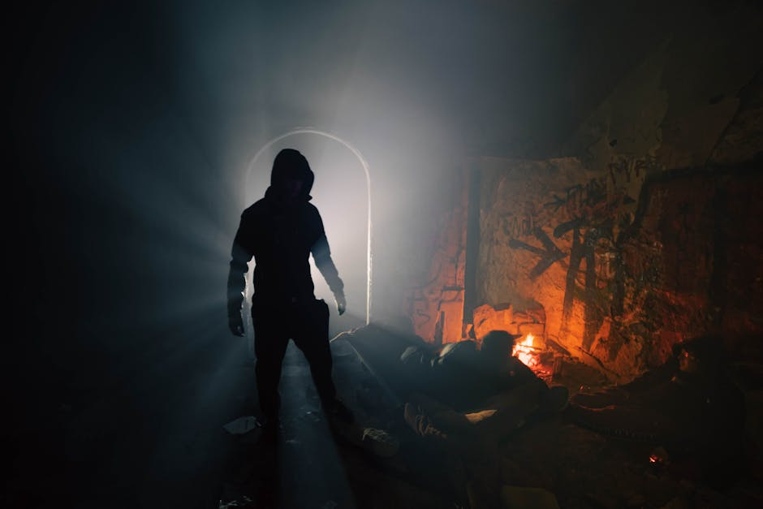
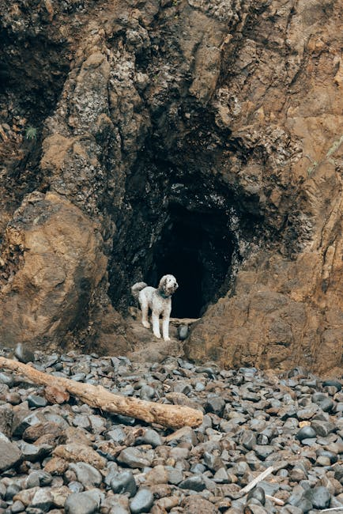
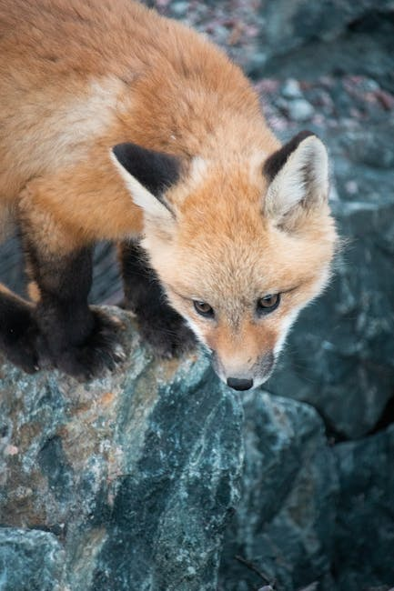
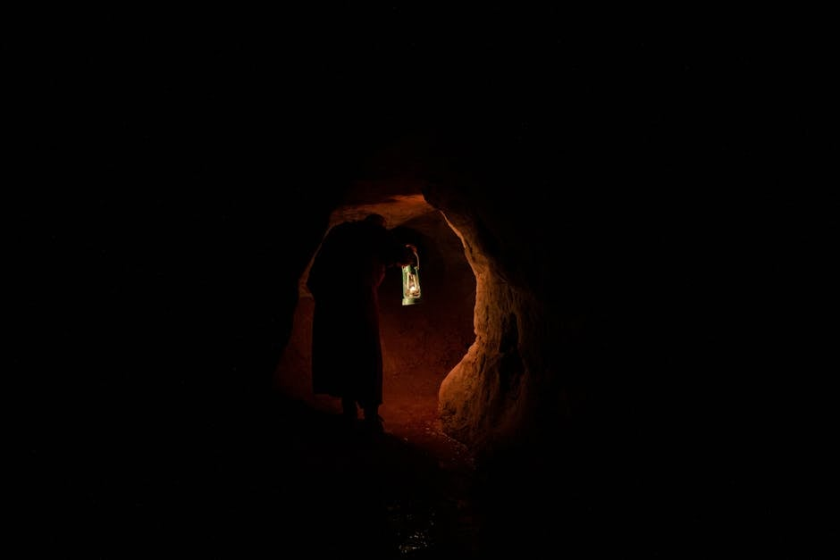
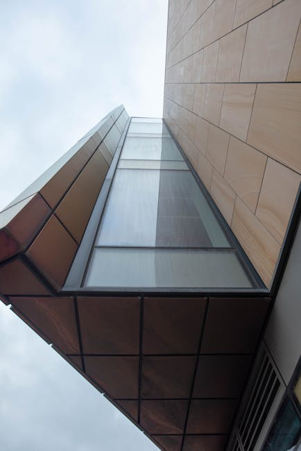
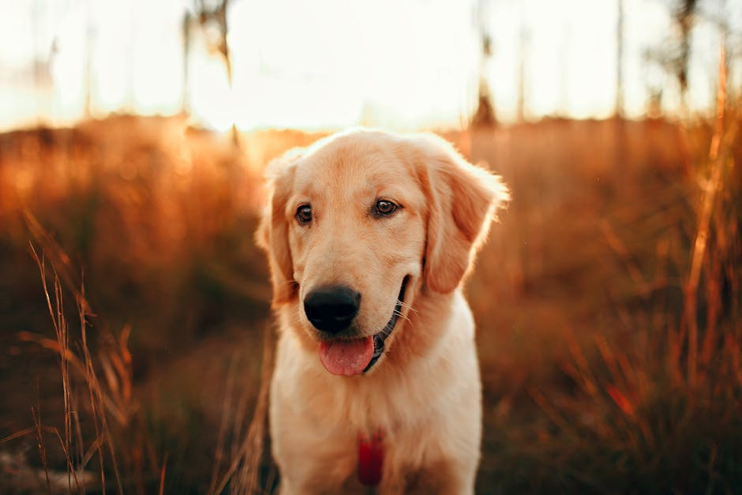

Generated Images
Theme: a dog and a fox
Prompt 1:
Capture the serendipitous encounter between Buddy the loyal dog and Jasper the sly fox in the heart of a tranquil forest. Depict Buddy's curious and friendly demeanor, contrasting with Jasper's cunning and cautious expression. Set the scene in a picturesque forest clearing bathed in warm sunlight, with lush green foliage and wildflowers adding vibrancy to the surroundings. Render the image in a realistic style with a focus on the intricate details of the characters' fur and the natural beauty of the forest.
Prompt 2:
Golden hour sunlight filters through lush forest canopy, casting dappled light on curious fox, Jasper, and loyal golden retriever, Buddy. Jasper, sly smile playing on his lips, beckons to Buddy with an outstretched paw. Background foliage blurs, framing Jasper and Buddy in foreground. Painting style, vibrant colors.

Prompt 3:
A loyal golden retriever, Buddy, follows a sly red fox, Jasper, into a dark cave. The cave is dimly lit with a faint glow coming from the entrance. Buddy's tail wags excitedly as he follows closely behind Jasper, his eyes fixed on the fox's every move. The cave walls are rocky and covered in moss, with a small stream running through the center.

Prompt 4:
Generate an image of a dog and a fox cautiously exploring a dark cave. The cave should be dimly lit, with rugged stone walls and a narrow path leading deeper into the darkness. The dog should be slightly ahead, its eyes alert and focused on the path. The fox should be close behind, its tail twitching nervously.

Prompt 5:
Create a dramatic scene in a dimly lit cave. In the foreground, a brown and white dog with floppy ears looks up at a red fox with concern. The fox holds a tiny, shivering fox cub in his paws. Behind them, cave walls adorned with sparkling crystals glow faintly, casting an eerie light on the scene.

Prompt 6:
In the depths of a dark cave, a sly fox, Jasper, and a loyal dog, Buddy, cautiously approach a source of whimpering. Buddy's eyes are wide with concern, while Jasper's gaze is focused and determined. The cave is dimly lit, with rough rock walls and a faint glow coming from somewhere ahead.

Prompt 7:
A dark cave interior with a rocky floor and damp walls. In the center of the frame, a brown and white dog and a ginger fox stand side by side, their bodies angled towards the left. They look into the distance with their ears perked forward and their tails lowered in caution. In the foreground, a small fox cub sits on the floor, whimpering with its eyes closed. The fox gently picks up the cub in its mouth. Style: realistic digital painting with soft lighting and a focus on the emotional connection between the characters.

Prompt 8:
Capture the heartwarming moment in a quaint forest clearing. In the foreground, a loyal dog, Buddy, looks at an abandoned fox cub held gently by a sly fox, Jasper. Depict warm, dappled sunlight filtering through the canopy, illuminating the scene with a golden glow. Render in a charming, cartoonish style with vibrant, playful colors. Focus on the characters' expressions, conveying Jasper's newfound compassion and Buddy's unwavering loyalty.

Prompt 9:
In the tranquil forest, a golden retriever named Buddy and a sly fox named Jasper huddle together in a warm wooden kennel. Buddy's protective gaze rests on a small, abandoned fox cub nestled between them. The cub's eyes are closed, and its tiny body shivers slightly. Soft, warm light illuminates the trio, casting a peaceful glow on their unlikely bond. Artistic style: realistic, detailed, soft lighting.